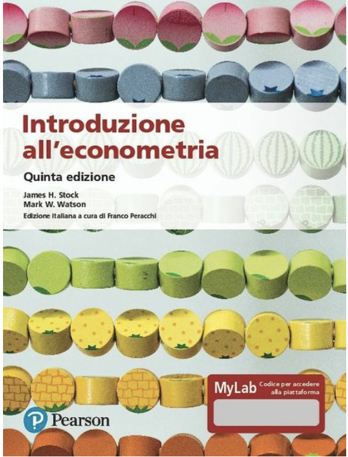

Elementi di Econometria
Corso di Laurea in Economia e Finanza
Sapienza Università di Roma
Programma 2022-2023
Docente
Giuseppe Ragusa
email: giuseppe.ragusa@uniroma1.it
web: https://gragusa.org
Importanti risorse web
Orario delle lezioni
| Giorno | Orario | Aula |
|---|---|---|
| Lunedì | 10:00 - 12:00 | |
| Mercoledì | 10:00 - 12:00 | |
| Venerdì | 10:00 - 12:00 |
Descrizione del corso
L’obiettivo del corso è quello di introdurre gli studenti allo studio dell’econometria mediante un approccio prevalentemente applicato. Sebbene il corso si sofferma sia sugli aspetti teorici sia su quelli pratici della disciplina, l’enfasi è sulla comprensione intuitiva dei concetti fondamentali della materia e sulla loro applicazione empirica su temi microeconomici, macroeconomici e finanziari.
Prerequisiti
E’ richiesta una bouna conoscenza della statistica di base.
Libro di testo

Stock, J. H. e Watson, M.W: Introduzione all’econometria, Pearson Italia, 2005.
Software

Il corso prevede l’utilizzo di R, uno dei linguaggi di programmazione statistico/econometrico più diffusi e potenti.
R ha una licenza open-source (GNU GPL), è compatibile con i maggiori sistemi operativi (GNU/Linux, macOS, Microsoft Windows).
Non è richiesta alcuna conoscenza preliminare del software R.
Obiettivi
Al termine del corso lo studente dovrà essere in grado di svolgere autonomamente un’analisi empirica ed interpretarne i risultati, valutando l’adeguatezza delle assunzioni necessarie per la correttezza delle interpretazioni.
In particolare, lo studente sarà in grado di
- Spiegare la filosofia dei modelli introdotti e la loro capacità di catturare relazioni causali o di fornire predizioni di buona qualità;
- Valutare l’adeguatezza delle assunzioni sottostanti i modelli econometrici;
- Valutare la qualità delle predizioni mediante rigorose misure statistiche;
- Usare R per stimare e valutare i modelli econometrici su dati reali.
Valutazione
La valutazione avverrà mediante prove scritte.
Gli studenti possono optare per due diverse modalità di esame.
Modalità classica
L* student* sostiene una prova scritta su tutto il materiale del corso nelle date degli appelli di esame.
L’esame riguarderà sia la componente teorica sia quella pratica e, pertanto, prevede l’utilizzo di R (la prova scritta si terrà in una delle aule di informatica della Facoltà di Economia).
Modalità smart
La modalità smart prevede:
6 esami casalinghi
Gli esami casalinghi hanno sia carattere teorico sia pratico e richiedono analisi econometriche su dati reali.
Ogni esame casalingo è valutato in trentesimi. Alla formazione del voto finale contribuisce la media aritmetica dei voti (in trentesimi) conseguiti nelle 6 prove. Formalmente, \[\overline{PIC} = \frac{1}{6}\sum_{i=1}^6 PIC_i,\] dove \(PIC_i\) è il voto nell’\(i\)esimo esame casalingo.
Gli esami casalinghi utilizzano la piattaforma di elearning moodle.
Esame intermedio in classe
L’esame intermedio è nello spirito simile agli esami casalinghi, ma sarà necessariamente più breve dovendosi svolgere durante l’orario delle regolari lezioni.
Possono partecipare a questa prova soltanto gli studenti che hanno ottenuto un punteggio sufficiente, cioè almeno 18/30, in tutti gli esami casalinghi assegnati antecedentemente alla data della prova intermedia.
Alla formazione del voto finale contribuisce il voto della prova intermedia, \(PI\), che è espresso in trentesimi.
Esame finale
Questo è lo stesso esame che sosterranno tutti gli studenti indipendentemente dalla modalità scelta. La differenza consiste nel criterio di formazione del voto finale.
Infatti, il voto finale per questa modalità – il voto registrato sul libretto – è ottenuto mediante la seguente formula
\[ \textrm{Voto Finale} = \max\left\{0.25\times \overline{PIC} + 0.35*PI + 0.40*PF, PF\right\}, \] dove \(PF\) è il voto dell’esame finale in trentesimi.
Il voto finale è quindi il massimo fra il voto dell’esame finale e la media pesata degli esami casalinghi e della prova intermedia.
Note:
Se il voto della prova intermedia è inferiore alla sufficienza (18/30), la media pesata non verrà presa in considerazione ed il voto finale coincide con il voto della prova finale;
L’opzione smart sarà disponibile soltanto per l’esame del primo appello successivo alla fine del corso.
Programma
Richiami di probabilità e statistica
Regressione lineare con un singolo regressore
Regressione con un singolo regressore: verifica di ipotesi e intervalli di confidenza
Regressione lineare con regressori multipli
Verifica di ipotesi e intervalli di confidenza nella regressione multipla
Funzioni di regressioni non lineari
Valutazione di studi basati sulla regressione multipla
Regressione con variabile dipendente binaria
Regressione con variabili strumentali
Regressione con dati panel
Esperimenti e quasi-esperimenti